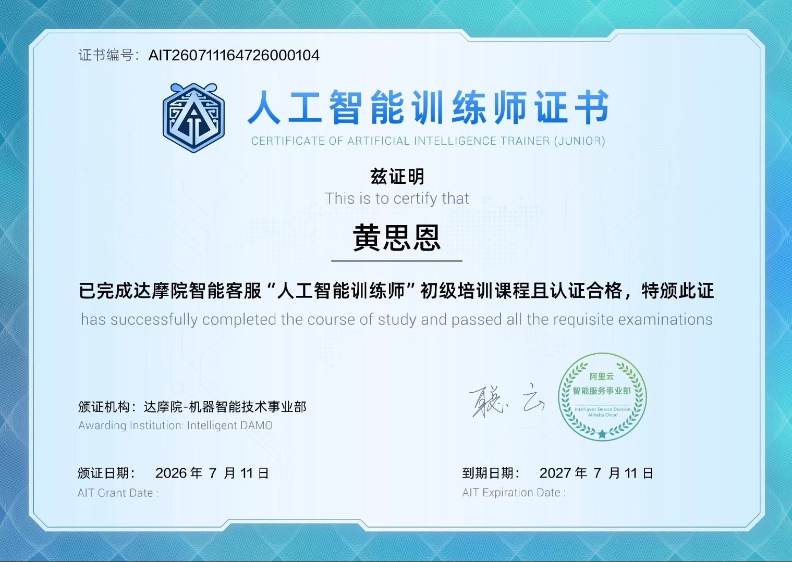
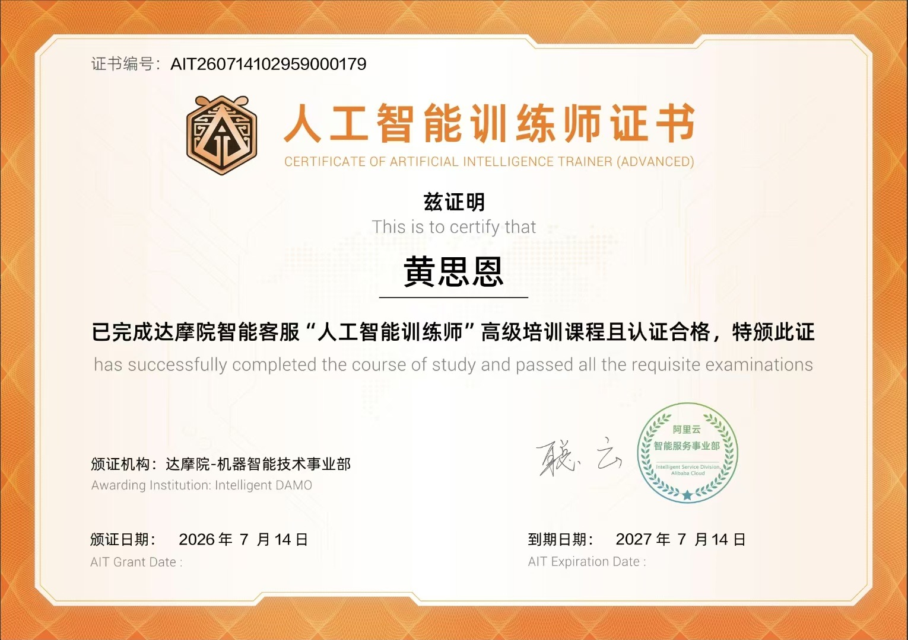
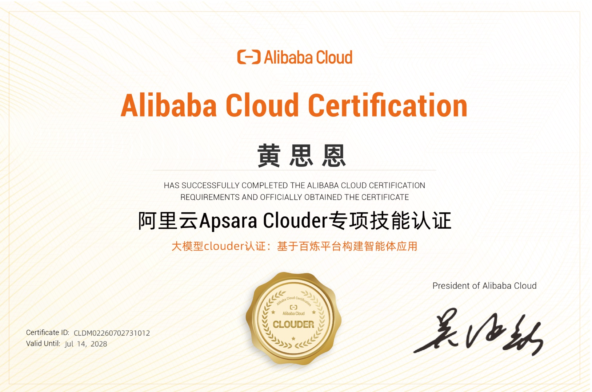
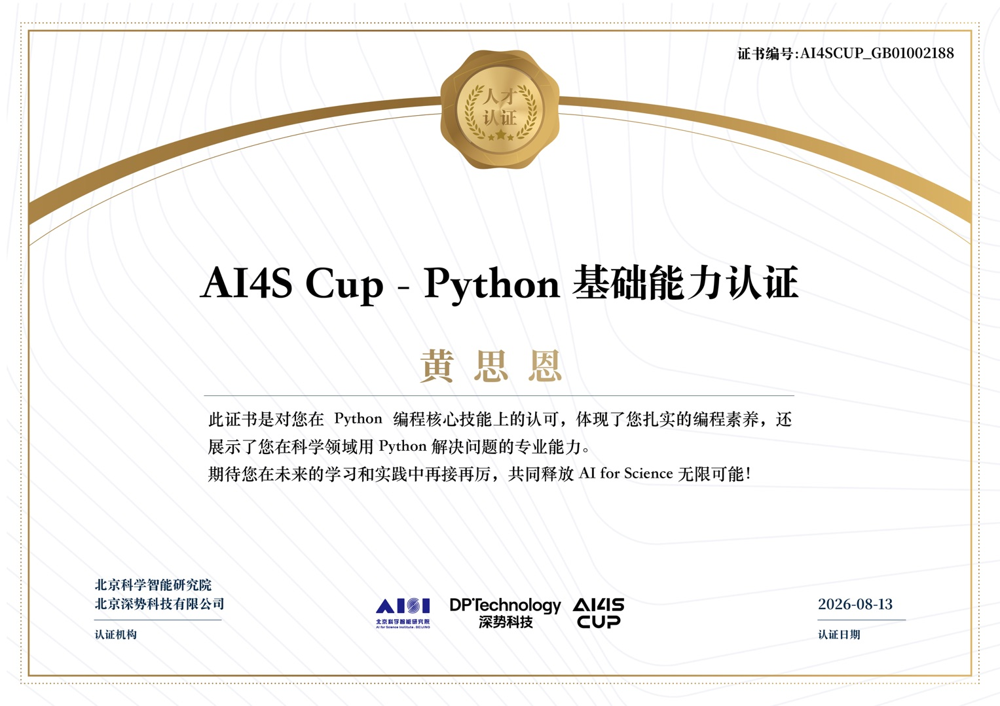

你好，我是
无人机应用技术 · 专科在读
性格开朗沉稳，习惯以"记录—分析—优化"循环解决问题。 能够适应高强度学习节奏，愿意从基础技术岗和基层执行中积累经验，逐步成长。
无人机应用技术 ｜ 专科（已录取）
高中
熟练使用 Office 套件（Word、Excel、PPT）
快速学习能力、结构化表达、团队协作，能适应规范化任务安排与限期交付
积极学习英语知识，持续提升语言应用能力
团员证

人工智能训练师（初级）

人工智能训练师（高级）

阿里云 Apsara Clouder 认证

AI4S Cup - Python 基础能力认证
习惯以"记录—分析—优化"循环解决问题，在项目中被队友评价为"能把想法推落地"的人。
能够适应高强度学习节奏，高中阶段已形成每日 2 小时自主学习计划表，并坚持执行。
性格开朗沉稳，能承受压力，愿意从基础技术岗和基层执行中积累经验，逐步成长。